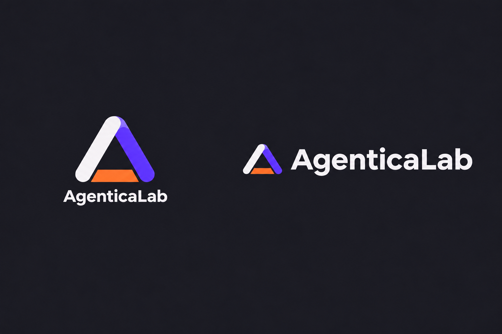

Propósito
Aumentar a produtividade, devolvendo tempo e liberdade a quem carrega o negócio nas costas.
Identidade visual, método e aplicações.
Aumentar a produtividade, devolvendo tempo e liberdade a quem carrega o negócio nas costas.
Desenvolver agentes de IA para executar tarefas repetitivas, reduzir custos e devolver ao dono tempo para crescer.
Ser referência em soluções para donos de negócios com operações no Brasil e nos Estados Unidos.
Clareza, resultado mensurável, simplicidade e ética com dados.
Se você ainda precisa cuidar do operacional da sua empresa, quem está fazendo ela crescer?
Para donos de negócios, profissionais liberais e escritórios com sobrecarga operacional. A entrega é uma solução pronta, integrada à rotina e medida em horas economizadas.
O ciclo começa com uma tarefa real. A equipe define as regras, o agente executa o combinado e a medição mostra o que ajustar na próxima rodada.
Processos · A agência define quais documentos cada viajante precisa e quem confere a lista.
Exemplo ilustrativo de uma agência de viagens. Selecione uma etapa para pausar e ler o exemplo. O ciclo completo dura 9,6 segundos.
Mapear a tarefa, identificar exceções e combinar critérios de aprovação com quem trabalha na operação.
Executar as etapas repetitivas e encaminhar as exceções para revisão humana.
Comparar tempo e retrabalho antes e depois. Usar a medição para ajustar as regras do próximo ciclo.
Escreva AgenticaLab em uma palavra, com A e L maiúsculos. O nome completo aparece em off-white nas assinaturas principais.
O Vértice se apoia sobre o nome centralizado. Use em capas e espaços próximos do formato quadrado.
Baixar versão vertical ↓O Vértice fica à esquerda, alinhado ao centro visual do nome. Use em cabeçalhos, propostas e rodapés.
Baixar versão horizontal ↓As regras que organizam o trabalho.
A execução das tarefas segundo as regras.
A base acompanha a altura dos pés. Dois recortes diagonais mantêm as três peças distintas.
Os SVGs são propostas de arte final em vetor, redesenhadas a partir da referência aprovada.

Use o Vértice isolado em avatares e ícones de navegador. Centralize o desenho e reserve espaço para o recorte circular do avatar.
Referências em largura real. Em 16 px, a versão off-white em uma cor dá mais contraste sobre chumbo. Em 24 px ou mais, use a versão colorida quando os recortes estiverem legíveis.
H é a altura visível do Vértice, do topo da dobra à linha da base laranja. Reserve ¼ de H em cada lado do símbolo ou da assinatura completa.
Com um símbolo de 80 px de altura, a margem livre é de 20 px em cada lado.
Mantenha a proporção ao redimensionar. Preserve os recortes da base e alinhe a assinatura horizontal pelo centro visual do nome.
A rotação desloca o eixo vertical e a compressão muda os ângulos do símbolo. Restaure a proporção do vetor.
Referências iniciais de produção: símbolo de interface a 24 px e conjunto horizontal a 160 px. Para o favicon, use a amostra específica de 16 px.
| Par de cores | Razão | Aplicação |
|---|---|---|
| #F4F2F7 / #1E1E25 | 14,90 : 1 | Texto sobre fundo principal |
| #1E1E25 / #FF6B2C | 5,83 : 1 | Texto em botão laranja |
| #F4F2F7 / #6B3BF5 | 5,29 : 1 | Texto sobre bloco roxo |
| #6B3BF5 / #1E1E25 | 2,82 : 1 | Haste direita e grafismos |
| #FF6B2C / #F4F2F7 | 2,56 : 1 | Destaque gráfico |
ABCDEFGHIJKLMNOPQRSTUVWXYZ · abcdefghijklmnopqrstuvwxyz · 0123456789
Clareza para interfaces, textos, propostas e legendas.
| Uso | Desktop / mobile | Peso |
|---|---|---|
| Hero | 76 / 44 px | 700 |
| H2 | 52 / 32 px | 600–700 |
| H3 | 26 / 22 px | 600 |
| Corpo | 18 / 16 px | 400 |
| Legenda | 13 / 12 px | 500 |
| CTA | 16 / 16 px | 600 |
Entrelinha: títulos 1.06–1.2; textos 1.6. Tracking dos títulos: −0.04em; labels em caixa alta: 0.12em.
Chumbo → roxo escuro
Chumbo + glow roxo
Off-white + lavanda
--noite: linear-gradient(135deg,#1E1E25,#362253); --vertice: radial-gradient(ellipse at 75% 20%,#6B3BF566,transparent 55%),#1E1E25; --lab: linear-gradient(135deg,#F4F2F7,#E8E0F4);
Textura discreta de fundo.
Contorno leve, contraste e hierarquia.
● tarefa recebida ● dados organizados ◷ aguardando aprovação
Grid de 12 colunas no desktop e 4 no mobile; espaçamento de 8 px; raio 12–20 px; ícones de linha de 1.5–2 px. A base laranja marca a entrega do resultado nos diagramas do Vértice.
Na assinatura atual, as duas hastes se revelam a partir do topo. A base laranja entra por último e fecha visualmente o triângulo.
Hastes em 0,2 a 1,2 s, base de 1,1 a 1,7 s, sinal na haste roxa até 2,3 s e assinatura até 3,5 s. Easing expo-out nas entradas. Com movimento reduzido no sistema, a animação começa pausada.
No diagrama, o pulso sai do Vértice e percorre o trajeto entre os pilares. Depois de Resultados, a rota inferior fecha o ciclo de ajuste. A pausa mantém a etapa selecionada em foco.
Ver o ciclo animado ↑“Menos retrabalho. Mais tempo para crescer.”
“Seu agente organiza a tarefa e você mantém o controle.”
“Revolucionário”, “disruptivo”, “fique rico com IA”, “substitua seus funcionários”.
Tom próximo, direto, casual e profissional. Site PT/EN, Instagram PT, LinkedIn EN. Saudação: “Faaala [nome], aqui é o André da AgenticaLab”. Meta de 10+ horas por semana é uma proposta de valor, não garantia universal.
Agentes de IA que assumem tarefas repetitivas, reduzem retrabalho e devolvem tempo para crescer.
Se você ainda cuida de todo o operacional, existe um caminho melhor.
Feed 1080 × 1350Mockups responsivos de direção visual, não arquivos exportados nos tamanhos indicados.
Contraste alto, geometria triangular, respiro, prova mensurável, CTA laranja.
Robôs genéricos, cérebros clichês, circuitos decorativos, arco-íris, linguagem de guru ou excesso de brilho.
:root {
--bg: #1E1E25;
--primary: #6B3BF5;
--accent: #FF6B2C;
--paper: #F4F2F7;
--muted: #B7AAC4;
--font-display: "Space Grotesk", sans-serif;
--font-body: "Inter", sans-serif;
--radius: 16px;
--space: 8px;
}Referências: ORDO · Labs I.A Community · briefing AgenticaLab, 19/11/2026.